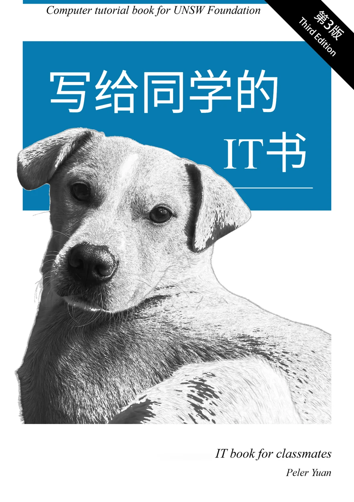

The University of Queensland
Brisbane, Australia
Bachelor of Engineering (Honours) / Master of Engineering
Electrical & Computer Engineering
~/peler $ whoami
also known as Xingjian
Student, Software Architect, Hardware Engineer, Server O&M, Technical Writer.
01 Student
Where I study, where I’ve studied — from passion to profession
Brisbane, Australia
Bachelor of Engineering (Honours) / Master of Engineering
Electrical & Computer Engineering
Sydney, Australia
Foundation Studies (Science)
01 Student
Courses I chose, beyond the classroom — curiosity, certified
04 selected certificates
Beyond certificates See what else I’m curious about02 Software Architect
Designed, written and debugged by hand — not a line from AI
No AI assistance. Every project in this block was designed, written and debugged by hand.
01 Hand-built · no AI
02 Hand-built · no AI
03 Hand-built · no AI
Built during a Hackathon
03 featured projects
GitHub View all projects02 Software Architect
Code got cheap, judgment didn’t — I own the spec and the proof
Agents write the middle. I own both ends.
Built with AI · shipped for real
Two mature projects, developed quickly with AI.
01 Open source · Java
Extends the open‑source Logisim‑evolution simulator to help draw circuits faster and read them more easily: continuous placement, one‑click rotation, wire auto‑snap, a component finder, datasheet‑style 74xx symbols, schematic notes and an MCP server for AI clients.
Built on Logisim‑evolution v4.1.0 · installs alongside the official release
02 Open source · Python · built with my roommate
Browse, search and export the local conversations and Skills of AI coding assistants, move them between tools, or pack them onto a portable drive and restore them on another machine. Everything stays on your computer, and every migration is previewed before anything is written.
Works with Claude Code, Codex, WorkBuddy, DeepSeek Harness and CodeBuddy.
03 Hardware Engineer
A drilling rig experiment system — designed and built from the ground up
Employed by a PhD researcher at Southeast University to design and develop a drilling rig experimental system from the ground up. Due to confidentiality requirements, only the overall system architecture and several key components are presented here; the project source code is not publicly available.
“Peler dedicated his spare time to supporting the end-to-end development and debugging of the experimental system.
He was responsible for developing software for specific devices, and provided valuable assistance during experimental procedures and data acquisition.”
Source code is confidential
Documentation Learn more03 Hardware Engineer
Where building things first got real — design, build, break, repeat
Fun competitions from primary and middle school: working with like‑minded friends to explore and solve real problems.
01 · First Prize · 20K+ views
First Prize at the 5th edition of China’s national youth AI innovation challenge, shown in a hands-on demo.
Watch the demo on Bilibili (video is in Chinese only)02 · VEX Robotics
A middle-school team skips class and flies thousands of kilometres to compete.
Watch the story on Bilibili (video is in Chinese only)04 Server O&M
One machine, five services — built, shipped across an ocean, still running
Uptime
Proxmox VE · Brisbane000d00h00m00s
Dec 2025Every week operationalNow
Running services
Architecture · Hardware · Journey
Deep dive Inside the homelab04 Server O&M
Problems worth solving — two designs where the obvious path was closed
01 Featured design
02 Quality of life
05 Technical Writer
A computer tutorial for UNSW Foundation — now in its third edition

By Peler Yuan
写给同学的 IT 书
When my classmates struggled with IT, I said: “Let me write you a book.”
Many of my Chinese classmates in the UNSW Foundation program struggled to understand computer concepts in English, so I wrote this book to help them.
V1 · First edition
From the Ground Up
Printed as 100 copies, with friends’ help
V2 · Second edition
Pursuit of Excellence
Arrived 30 minutes before my graduation
V3 · Third edition
Continuing the Legacy
Reprinted for the next cohort
Reader reviews
“This book helps me really a lot! Will there be a new edition of this book? It is so useful!”
Emma · After the theoretical exam
“The vocabulary list at the end of each chapter is very helpful, especially for someone like me who finds it difficult to remember English words.”
Ethan · Suggested the vocabulary table
“I am honored to collaborate with Peler again. The book involves many complex technical concepts that require appropriate simplification to balance general understanding and professionalism.”
Tommy · Reviewer of the book
“Writing a book like this would be so cool. Will we (commerce class) have it?”
Mike · On seeing the first draft
Chapters, editions and the full set of reviews
Book site Learn more05 Technical Writer
Classic open-source books, in Chinese — drafted by AI, checked by hand
AI-assisted, openly. A model writes the first draft; a person then checks it against the original.
A model is fast at the first pass, and that is all I ask of it. What the reader actually gets is decided in the second pass, line by line against the original.
Original · EN
Premature optimization is the root of all evil.
AI draft · 中文
过早的优化是所有邪恶的根源。
Checked · 中文
过早优化是万恶之源。
An example sentence for illustration, not taken from a published translation.
Books and status to be announced
Translations Browse the books06 Beyond the five
A few more things I keep coming back to — wherever a good question is
Finding the story inside the numbers.
How machines learn, and what that changes.
Asking why before asking how.
How incentives shape people and systems.
Noticing the light, then waiting for it.
…and whatever question comes next.
07 Contact
A project, a question, or just hello — I read every message
Open to opportunities
Internships, research collaborations and interesting side projects. I usually reply within 48 hours.